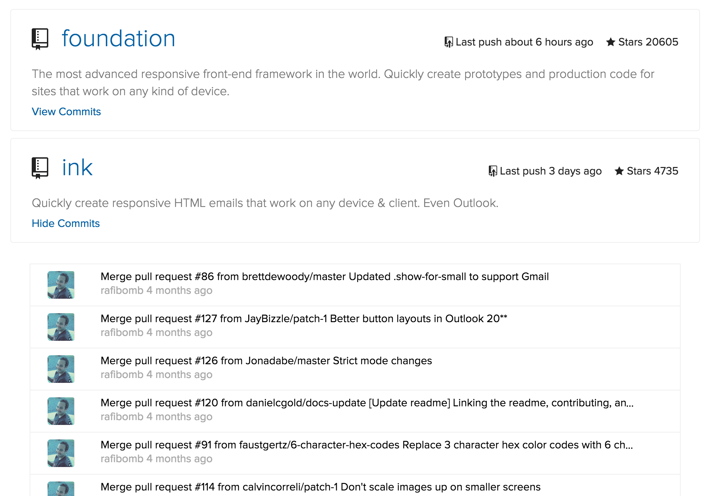

<!doctype html>
<html class="no-js" lang="en">
<head>
  <meta charset="utf-8" />
  <meta name="viewport" content="width=device-width, initial-scale=1.0" />

  <title>GitHub</title>
  <link rel="stylesheet" href="assets/css/app.css" />
  <script src="assets/js/modernizr.js"></script>
</head>
<body id="body">
  
  <script type="text/template" id="app-template">
  <form data-repo-form>
    <div class="row collapse">
      <div class="small-3 large-2 columns">
        <span class="prefix">github.com/</span>
      </div>
      <div class="small-7 large-8 columns">
        <input class="<%= errorMessage ? 'error' : '' %>" tabindex=1 data-repo-name-input type="text" placeholder="Enter organization name...">
        <% if (errorMessage) { %>
          <small class="error"><%= errorMessage %></small>
        <% } %>
      </div>
      <div class="small-2 large-2 columns">
        <button href="#" type="submit" class="load-repos button postfix"><span>Load Repos</span></button>
      </div>
    </div>
  </form>
  
  <div data-repos></div>
  
  <div class="row instructions">
    <div class="large-4 columns">
      <h1>Github Repos</h1>
      <p>This is a simple interactive UI to display a list of an arbitrary organization's Github projects ranked by star gazers.</p>
      <p>It's completly impemented client side using Backbone.js and a little jQuery. The source code is available on <a href="https://github.com/mkelly12/github-repos">Github</a></p>
      <p>If you want to see your private repos or make more then 60 API requests an hour you will need to enter your <a href="https://github.com/blog/1509-personal-api-tokens">Github personal access token</a> below.</p>
      
      <form data-api-key-form>
        <div class="row collapse">
          <div class="small-12 columns">
            <input data-api-key-input type="text" value="<%= access_token %>" placeholder="Github personal access token...">
            <button data-save-api-key-button href="#" type="submit" class="button"><span>Save API Key</span></button>
          </div>
        </div>
      </form>
      
    </div>
    <div class="large-8 columns">
      
    </div>
  </div>
</script> 

  <script type="text/template" id="repo-template">
  <div class="row repo-card">
    <div class="small-12 columns">
      <div class="row">
        <div class="large-6 small-12 columns">
          <h1>
            <span class="mega-octicon octicon-repo"></span>
            <a href="<%= html_url %>" class="title"><%= name %></a>            
          </h1>
        </div>
        <div class="large-6 columns hide-for-small">
          <span class="number"><span class="octicon octicon-star"></span> Stars <%= stargazers_count %></span>
          <span class="number"><span class="octicon octicon-repo-push"></span> Last push <%= jQuery.timeago(pushed_at) %></span>
          <!-- <span class="number"><%= watchers_count %><span class="octicon octicon-eye"></span></span> -->
        </div>
      </div>
      
      
      <h5><%= description %></h5>
      <!--<h5>Size <%= size %></h5> -->
      <a data-show-commits class="show-commits" href="#">View Commits</a>
      <a data-hide-commits class="hide-commits" href="#">Hide Commits</a>
    </div>
  </div>
  
  <div data-commits class="commits">
    <div data-show-all class="show-all commit row">
      <div class="small-12 columns">
        <a href="https://github.com/<%= full_name %>/commits/<%= default_branch %>">View all commits on <%= default_branch %></a>
      </div>
    </div>
  </div>
  
</script> 
  
  <script type="text/template" id="commit-template">
  <div class="small-2 large-1 columns">
    " />
  </div>
  <div class="small-10 large-11 columns">
    <a href="<%= html_url %>"><span class="message" title="<%= commit.message %>"><%= commit.message %></span></a>
    <span class="author">
      <% if (committer) { %>
        <a href="<%= committer.html_url %>"><%= committer.login %></a>
      <% } else if (author) { %>
        <a href="<%= author.html_url %>"><%= author.login %></a>
      <% } else if (commit.author) { %>
        <%= commit.author.name %></a>
      <% } %>
    </span>
  
    <!-- <a href="<%= html_url %>"><%= sha %></a> -->
    <span class="time"><%= jQuery.timeago(commit.committer.date) %></span>
    <!-- <span><%= commit.comment_count %><span class="octicon octicon-comment"></span></span> -->
    <!-- <span class="comment-icon mega-octicon octicon-link-external"></span> -->
  </div>
</script>
  
  <script src="assets/js/all.js"></script>
  
</body>
</html>